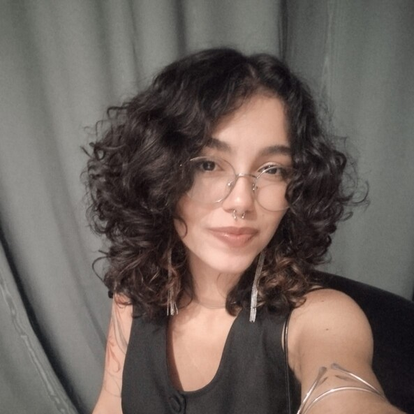

Sobre mim:
Sou Manu Oliveira, arquiteta e urbanista, artista visual e muralista. Minha trajetória reúne experiências em projetos arquitetônicos, pintura artística, muralismo e intervenções urbanas, com interesse especial na cultura maranhense, na natureza e nas relações entre arte, identidade e território.
Também tenho interesse em expografia e cenografia, explorando possibilidades de criação e ocupação dos espaços. Atualmente, estou cursando Front-end pelo Programa Trilhas, buscando ampliar meus conhecimentos em tecnologia e desenvolvimento web.